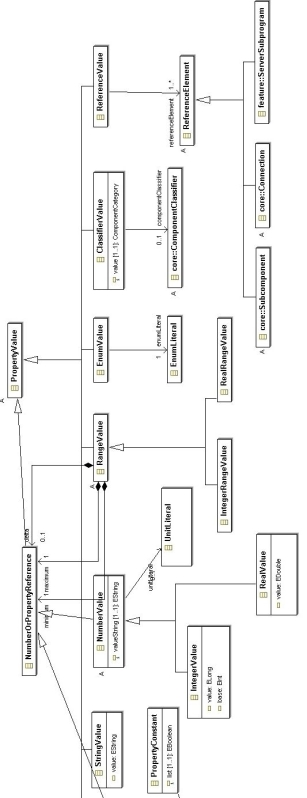
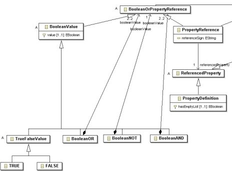

Previous
Next
Previous
Next 
| 4.14 Property Values |
The AADL supports a number of different property values
that correspond to the property type of the
property definition referenced by a property association. The property value is represented by
the
abstract PropertyValue class. Concrete subclasses represent values of specific types. The
value
types StringValue, IntegerValue, RealValue, IntegerRangeValue, RealRangeValue, EnumValue,
ClassifierValue, and ReferenceValue are shown in Figure 30. BooleanValue
and
PropertyReference are shown in Figure 31.
The common super class to IntegerValue and RealValue
called NumberValue has a reference
association called unitLiteral to a unit literal defined as part of an enumeration type.
An
IntegerRangeValue and RealRangeValue object contains a minimum value, a maximum value,
and
an optional delta value, represented by appropriate containment associations defined for a common
super class called RangeValue. These containment associations refer to a class called
NumberOrPropertyReference. This class is a super class of NumberValue and of
PropertyReference and represents the fact that the value can be expressed as an actual value,
or
as a reference to a property constant.

Figure 30 Property Values
NumberValue objects have a valueString
attribute to represent the value as a string. This is done
to preserve the particular representation chosen in the textual AADL representation. For example,
the integer value 10,000 may also be represented as 10e5. In addition, the actual value, and in
the
case of integers the base, are also stored as value and base attributes.
Enumeration values are represented by objects that have
a reference association to an
enumeration literal. Classifier values are represented by the concrete ClassifierValue
class, which
records the classifier’s component category in an attribute and an optional classifier reference
with
a reference association. Acceptable enumeration values for the componentCategory attribute
are
defined in Figure 33. The ReferenceValue class represents reference values to elements
in the
AADL model. Those references are recorded as a sequence of references to subcomponents
terminating in a subcomponent, connection, or server subprogram. The sequence is realized by a
multiplicity reference association and represents a path to the referenced element. The elements
that can be referenced, are represented by the abstract class ReferenceElement.

Figure 31 Boolean Property Expression
The AADL supports Boolean expressions as Boolean values.
This is represented by the concrete
subclasses TRUE, FALSE, BooleanOR, BooleanAND, and BooleanNOT.
The three classes
representing the Boolean operators have containment associations pointing to the
BooleanOrPropertyReference class to reflect the fact that either Boolean values or references
to
other properties or property constants are permitted. The precedence order of the Boolean
operators, as defined in Section 10.4 (p.164 of AS5506), is reflected in the containment hierarchy
of the Boolean operator objects.
Property values can be expressed as references to a property
constant or another property using
the value construct. Such references are represented by the PropertyReference class.
In the
case of references to number property constants, the reference can include a sign, which is
recorded as a sign attribute. A null value indicates no sign, the strings “+”
and “-“ represent the
plus or minus sign. A PropertyReference can refer to a ReferencedProperty class,
i.e., a
PropertyDefinition or a PropertyConstant class. Property constants and property
definitions, also
known as Property name declarations, are described in Annex C.4.16.